Mstudio, c'est le meilleur soft landing pour un entrepreneur à expérience internationale qui veut lancer sa startup en Afrique francophone.
Postuler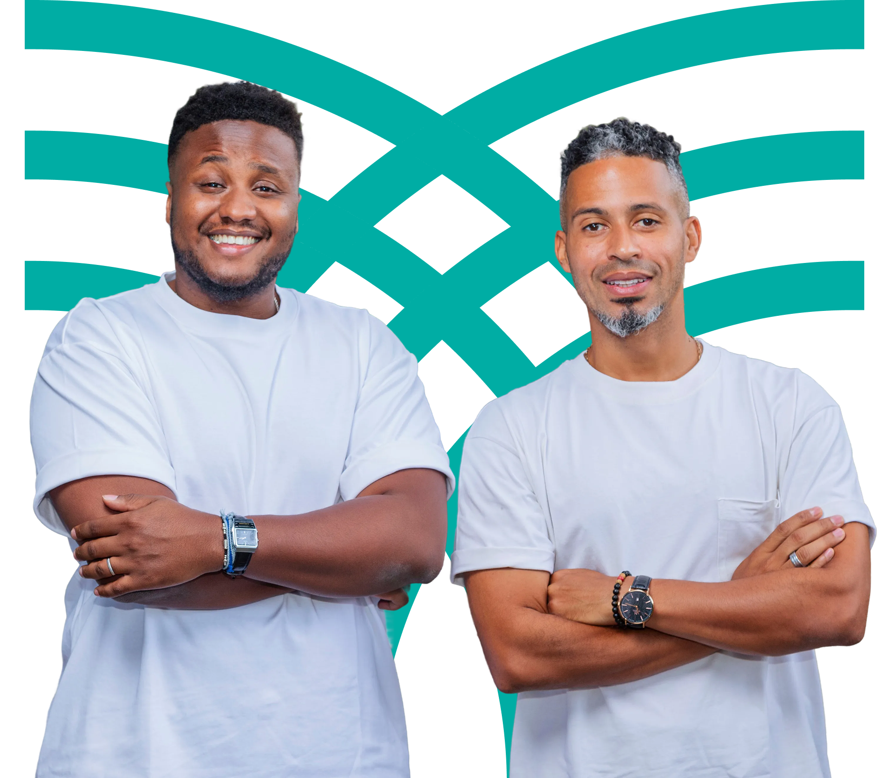
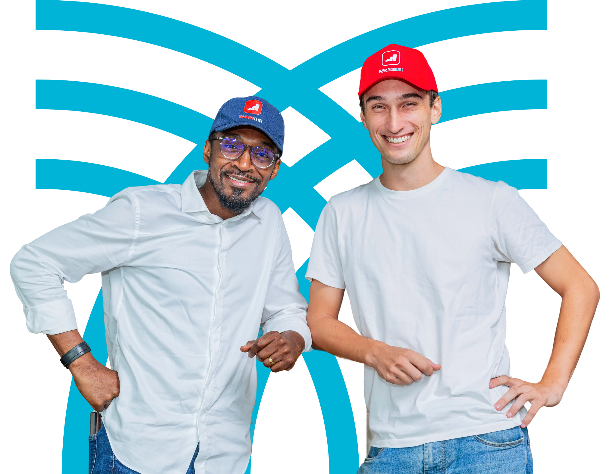
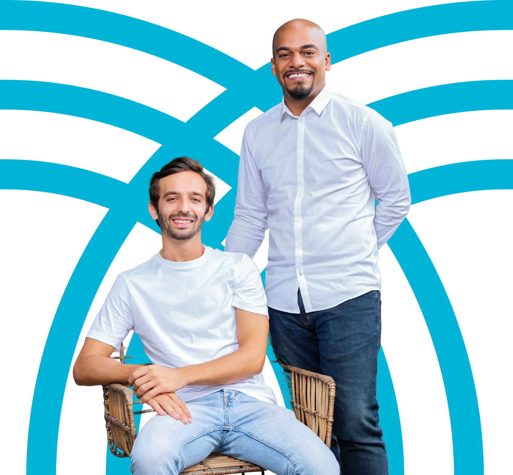
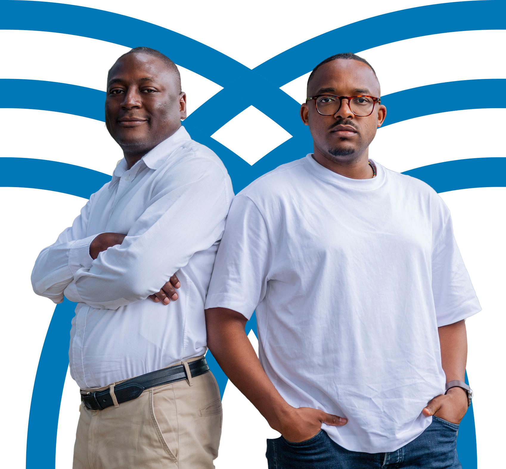
Le startup studio est un modèle éprouvé globalement, qui propulse les startups à devenir des entreprises autonomes deux fois plus vite que la moyenne.
Source : Global Startup Studio Network.
des startups de studio atteignent la Série A, soit 30 % de plus que les startups classiques.
Source : Global Startup Studio Network.
Avec un studio, une startup a 30 % de chances en plus d'atteindre sa Série A.
Une fois ta candidature déposée via notre page carrière, nous évaluerons la possibilité de travailler ensemble.
Nous effectuons des recherches approfondies pour générer des idées de startup en nous inspirant de business modèles éprouvés d'Afrique anglophone. Nous te présentons nos idées et nous trouvons ensemble celle qui correspond le mieux à tes compétences et à ta motivation.
Rejoins pendant trois mois notre programme d'Entrepreneur in residence qui te permet de valider l'idée, construire ton pitch deck et ton prototype. Tu dois trouver ton cofondateur CEO ou CTO/COO d'ici la fin du programme. On t'aidera en te présentant des profils et on te soutiendra tout au long du processus pour s'assurer que vous êtes un bon match.
Maintenant que tu as l'idée et ton deuxième cofondateur, il est temps de présenter devant le comité d'investissement ton pitch deck ainsi que ton business plan sur trois ans pour ta startup. À la fin de ton pitch, le comité valide ou non ton entrée dans Mstudio.
Si tu as le Go du comité d'investissement, tu entres officiellement dans le studio. Pendant un an, tu travailles main dans la main avec une dizaine d'experts opérationnels qui t'aideront à développer ton produit, atteindre le product market fit et scaler tes revenus, etc.
Après 12 mois, tu es prêt à quitter le nid ! Nous t'aidons à lever un tour de table seed auprès de notre réseau d'investisseurs. Tu deviens indépendant du studio sur le plan opérationnel et financier. Mais nous ne serons jamais trop loin, tu deviendras un membre à vie de la communauté Mstudio.
Tu fais partie de la diaspora africaine ? Tu as bâti une expérience internationale dans les meilleures écoles et entreprises ? On t'accompagne, financièrement et opérationnellement, pour rentrer au pays et entreprendre.
Postuler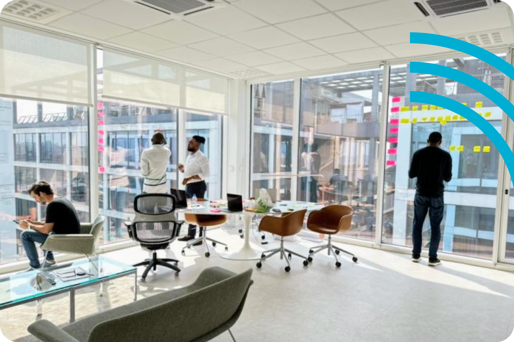
La Côte d'Ivoire, c'est 40 % du PIB de la sous-région et une croissance annuelle moyenne proche de 7 % entre 2022 et 2025, ce qui lui confère la place de pays le plus riche de l'UEMOA.
C'est une économie en marche avec une forte richesse en ressources naturelles, des infrastructures modernes, une classe moyenne grandissante, et un large secteur informel qui ne demande qu'à être transformé.
Akwaaba ! Abidjan n'a rien à envier aux plus grandes capitales du monde. La Côte d'Ivoire a énormément à offrir humainement et culturellement. Avec plus de 60 ethnies dont l'hospitalité n'est plus à présenter, le pays regorge de coutumes, mets gastronomiques, destinations touristiques… qui séduisent.
Il y fait bon vivre ! La population est cosmopolite et internationale. Quant à la ville, elle offre un cadre de vie facile et commode, avec des enseignes, loisirs, écoles et hôpitaux de standard international. Babi est doux et reste the capital of Enjoyment de l'Afrique !
Le modèle de startup studio existe depuis des décennies. Il s'exporte de plus en plus vers l'Afrique car il a fait ses preuves en Europe et aux Etats-Unis.
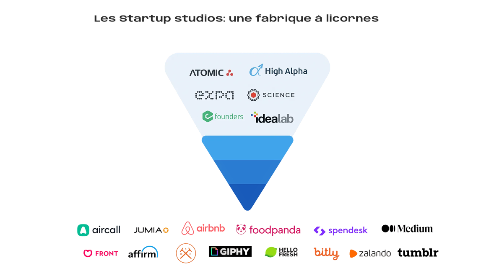
Une fois que la startup entre officiellement dans le studio, nous devenons le troisième co-fondateur "institutionnel". En échange de l'accompagnement que nous apportons à la startup, nous prenons une participation dans son capital.
Le cofondateur rejoint premièrement notre programme d'Entrepreneur in residence (EIR) qui dure trois mois. À la fin de ce dernier, il pitche devant le comité d'investissement (IC) qui donne son GO ou NO GO. En cas de GO, la startup est incorporée et entre officiellement dans Mstudio. Une fois dans le studio, la première année est dédiée au développement du MVP et l'atteinte du Product Market Fit.
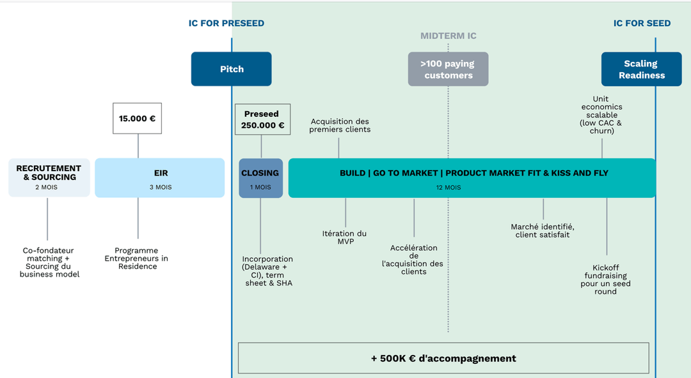
Il suffit de postuler pour devenir cofondateur CEO ou CTO/COO via notre page carrière. Si ton profil correspond à nos critères, notre équipe de recrutement te contactera pour t'inviter à un entretien préliminaire, qui sera suivi d'une épreuve de pitch.
Durant les trois mois d'EIR, les entrepreneurs doivent réaliser une étude comparative des meilleures startups dans leur domaine à l'international pour s'en inspirer, valider l'idée auprès de clients finaux, développer une proposition de valeur, construire un pitch deck, un business plan, tester un prototype et développer un MVP.
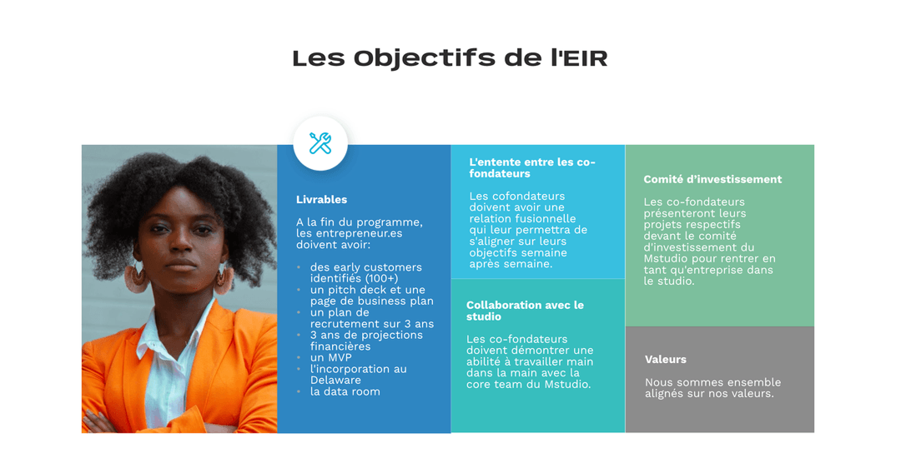
Mstudio source des idées de modèles économiques à succès d'Afrique anglophone, et les réplique en Afrique francophone. Très souvent, une startup qui a levé plus de 3M € en Afrique anglophone a un équivalent en Amérique latine ou Asie du Sud-Est ayant levé encore plus d'argent. Cela confirme que la startup en question traite bel et bien un sujet éprouvé que l'on peut facilement adapter aux réalités de l'Afrique francophone.
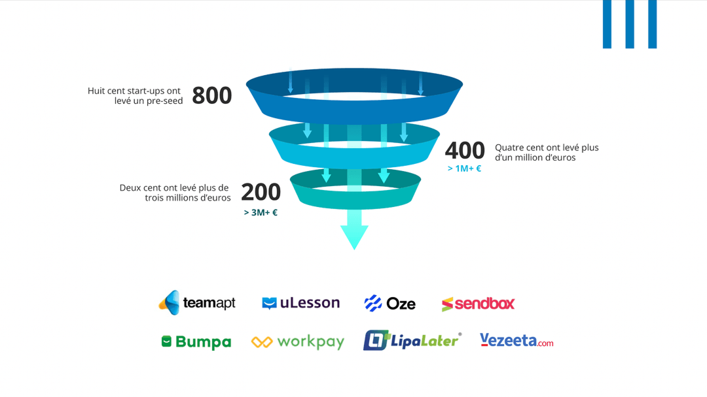
Le développement du produit et sa commercialisation restent au sein de la startup, et sont la responsabilité des co-fondateurs CEO et CTO/COO. La core team de Mstudio vient en renfort pour accélérer la croissance de la startup sur les sujets suivants : UI/UX design, produit & architecture, recrutement, comptabilité, fundraising, marketing digital, etc.
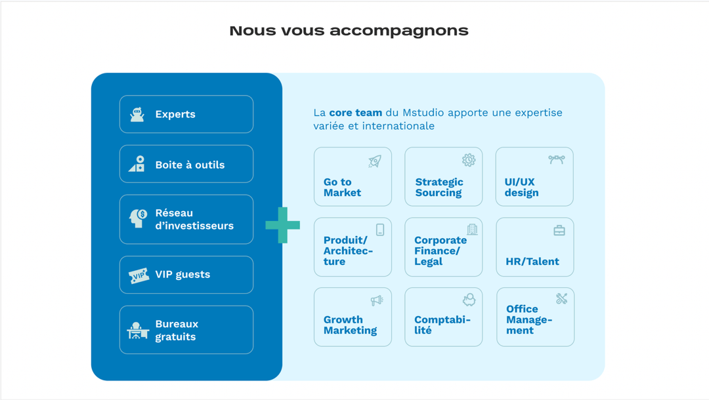
Nous pensons que douze mois sont nécessaires pour emmener la startup à atteindre un bon niveau de croissance et devenir autonome. Néanmoins, il peut y avoir des exceptions.
Durant l'EIR, Mstudio prend en charge à hauteur de 15 000 € les dépenses opérationnelles de la startup. Cela inclut une aide aux frais de nourriture, transport et logement pour les cofondateurs. Les détails précis te seront communiqués lors d'un appel avec notre équipe de recrutement. Par ailleurs, chaque cofondateur est responsable du paiement des frais d'incorporation pour sa startup, qui s'élèvent à 1 500 €. Ce montant est dû entre la première et la deuxième semaine d'EIR. Post comité d'investissement, Mstudio investit 250 000 € par an et par startup, en nature, en échange d'une prise de participation de 25 %. Ce montant est valorisé fois deux, soit 500 000 €.
Le Sidecar fund du studio est un VC international avec la capacité financière pour accompagner nos startups sur deux ans. Celui-ci investit en cash 250 000 € dans chaque startup en échange d'une prise de participation de 12,5 %.
Nous suggérons fortement que les deux cofondateurs aient chacun 50% des parts au démarrage, car c'est l'exécution et l'engagement sur le long-terme qui comptent.
Les startups qui ressortent de studios ont globalement un taux de succès moyen de 60 % (source : Global Startup Studio Network).
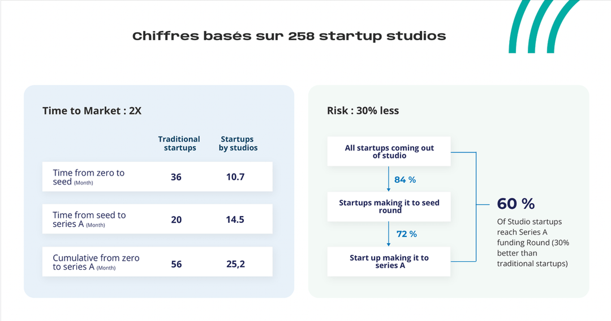
Le deuxième co-fondateur restant est libre de poursuivre le projet. Il suffit alors de recruter un cofondateur pour remplacer celui qui sort. Les termes de Mstudio protègent le projet en premier.
Une fois que la startup a levé son Seed, elle devient une startup tout à fait « normale » et sort du studio. Les fondateurs sont aux commandes, ils disposent d'un conseil d'administration composé des fondateurs et des principaux investisseurs, dont Mstudio. Au fur et à mesure que la startup se développe, l'équipe s'agrandit également. À mesure que la consommation de trésorerie augmente, la startup doit généralement lever des tours de financement supplémentaires, souvent auprès de sociétés de capital-risque (séries A, B, C...). En général, les startups ne sont pas rentables pendant longtemps, car elles ont tendance à investir beaucoup dans la croissance de la boite (par exemple en embauchant des ingénieurs, des commerciaux, du marketing, etc.). À noter que Mstudio continue d'accompagner stratégiquement sur toute future levée de fonds. Mstudio reste actionnaire jusqu'à une « sortie », un rachat de parts, la société est vendue, ou cotée sur un marché public.
Non, nous croyons fortement que l'entrepreneuriat n'est pas une aventure solitaire. C'est ensemble en collaborant que nous allons plus loin !
C'est le cadre idéal pour se lancer dans l'entrepreneuriat en Afrique francophone à moindre risque. Nous accompagnons nos entrepreneurs autant financièrement qu'opérationnellement à réussir sur le marché d'Afrique francophone.
Non, il faut vivre ou se relocaliser à Abidjan pour participer à Mstudio.
Notre marché cible c'est l'UEMOA. Pour commencer, nous choisissons de nous lancer premièrement en Côte d'Ivoire, qui est le pays le plus riche de la sous-région mais aussi celui où Mstudio est implanté. Par la suite, nos startups vont scaler géographiquement sur le reste de l'UEMOA et de l'Afrique francophone de manière large. L'avantage clé de l'UEMOA est le fait que la sous-région a une langue et une monnaie unique.
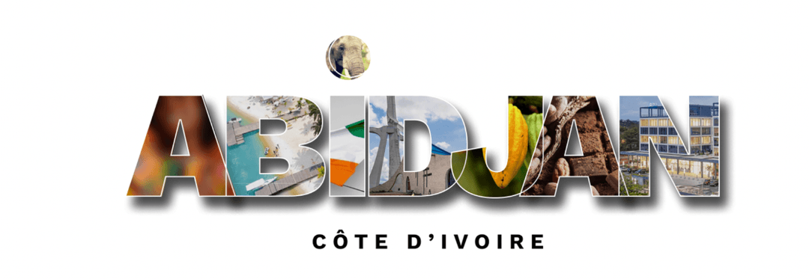
Pas du tout ! Nous souhaitons que chaque cohorte d'entrepreneurs soit diverse et variée en origine, background et expertise.
Oui. Nos startups servent le secteur informel d'Afrique francophone : parler français est indispensable pour comprendre le terrain et tes utilisateurs.
Les cofondateurs reçoivent un salaire décent en tant qu'employé de leur startup.
Les startup studios s'impliquent dans le début du processus de création des startups et s'occupent de leur apporter du capital financier et humain, c'est-à-dire un capital d'amorçage, qui est alloué à chaque projet en fonction de ses besoins, en plus d'un espace de travail, de différents outils, et même des collaborateurs qui travaillent sur les différents projets. En échange, le studio prend une participation dans le capital de la startup.
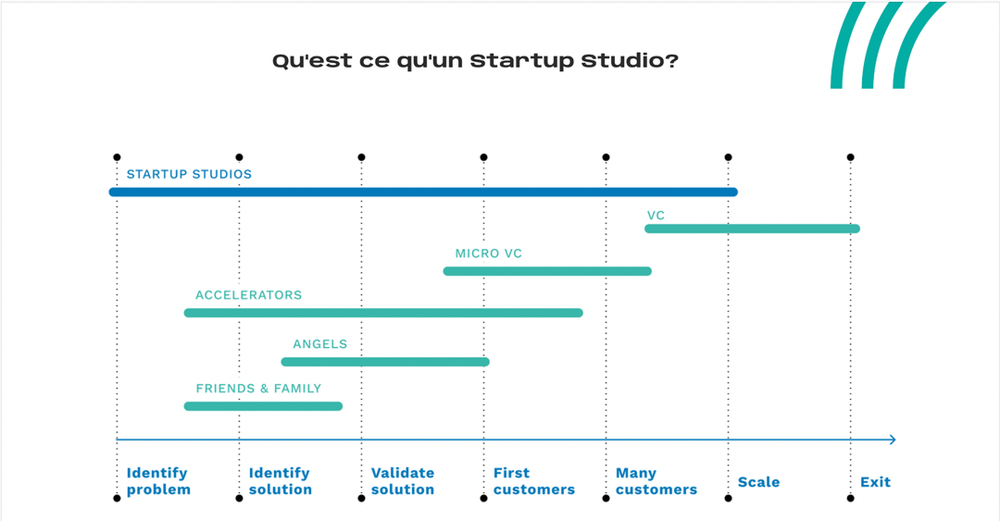
Nous travaillons sur des solutions digitales qui transforment le secteur informel en Afrique francophone en utilisant l'interface mobile. Les startups que nous lançons ont des business models B2B ou B2B2C.
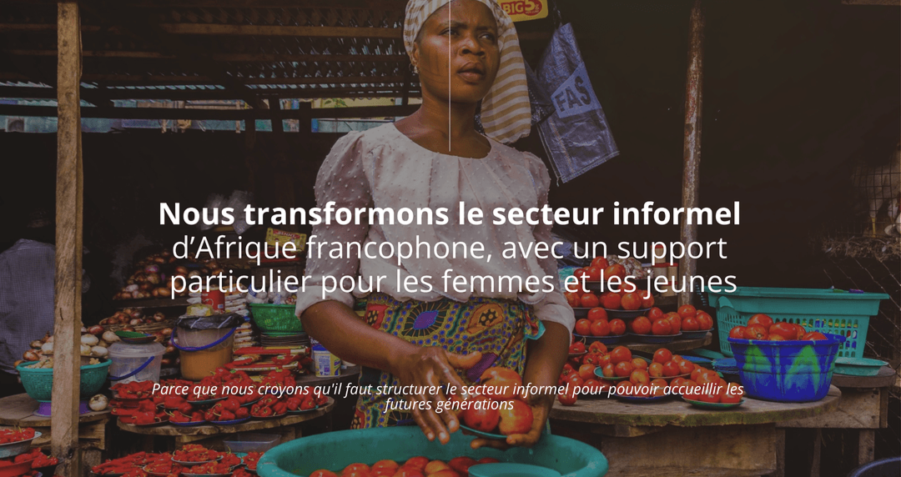
Nos startups sont toutes incorporées au Delaware. La structure au Delaware devient alors la holding de la filiale en Côte d'Ivoire.
Oui, et voici pourquoi. On finance tout pendant les 12 premiers mois : salaire minimum viable pour les fondateurs et les premières recrues, plus tous les coûts d'amorçage de ta startup. On apporte aussi une équipe d'une dizaine d'experts dédiés à ton projet, ce qu'aucune autre structure n'offre aujourd'hui. Tu n'es pas une petite équipe de fondateurs, mais une grande équipe prête à donner vie à ton projet. Résultat : tu passes de l'idée au MVP, à tes premiers clients et à ta levée bien plus vite. Et au-delà de la vitesse, c'est une question de profondeur : mentorat, accès à un vaste réseau et accompagnement concret sur la stratégie, le produit et l'entrée sur le marché. Les 37,5 % de parts (25 % pour Mstudio et 12,5 % pour l'investisseur partenaire) reflètent cet engagement envers ta réussite. Et surtout : tu restes majoritaire, avec plus de 60 % des parts.
Chez Mstudio, nous croyons qu'il faut cultiver le potentiel et favoriser l'esprit d'entreprise. Chaque année, environ 1 500 aspirants entrepreneurs nous contactent. Parmi eux, nous sélectionnons en moyenne 20 fondateurs (deux par projet), sur trois critères : l'ambition, l'humilité et la capacité d'exécution. Notre objectif est de trouver la meilleure adéquation entre ta vision et notre expertise, en donnant à chacun une chance équitable et en misant sur celui qui, selon nous, a le plus grand potentiel pour réussir dans le monde stimulant des startups.
La startup travaillera tous les jours depuis nos bureaux, littéralement assise sur le même banc aux côtés de la core team du Mstudio. Cela signifie que nous travaillons ensemble et interagissons au quotidien sur tous les sujets : produit, design, recrutement, go-to-market, levée de fonds, gestion d'équipe, etc. Pour garantir que nous gardons le bon rythme de livraison et que tout le monde soit sur la même longueur d'onde, nous avons une organisation de sprint hebdomadaire qui s'applique à tous les sujets (produit bien sûr, mais aussi business, go-to-market, etc). Ces sprints sont soutenus par des routines hebdomadaires : kick-offs, mid-week check-ins, weekly reviews, etc, ainsi que des réunions ad hoc pour approfondir des questions spécifiques. Nous avons une réunion bimestrielle appelée Demo day, où chaque projet fait une présentation à l'équipe Mstudio et à toutes les autres équipes de startup pour prendre du recul sur leur avancement et définir la roadmap à 2 mois.

Le prochain grand entrepreneur d'Afrique francophone, c'est peut-être toi.